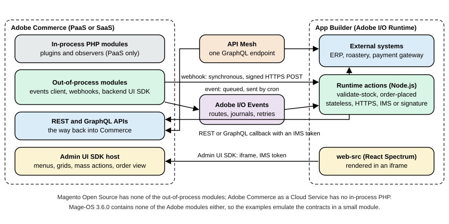

Out-of-Process Extensibility
|
This content was generated with the assistance of AI and should be verified against the official documentation before being relied on in production. |
This page was written against Adobe Commerce 2.4.9 (generally available on 2026-05-12) and Adobe Commerce as a Cloud
Service (ACCS), and checked on 2026-10-27. The versions of the out-of-process pieces on that date are Adobe I/O Events
for Adobe Commerce 1.23.0 and Adobe Commerce Webhooks 1.20.0 (both released on 2026-10-09), Admin UI SDK 5.0.0
(2026-09-16), @adobe/aio-commerce-lib-app 2.0.0, the Adobe I/O CLI (@adobe/aio-cli) 11.2.0 and the API Mesh plugin
(@adobe/aio-cli-plugin-api-mesh) 5.7.3. Out-of-process extensibility belongs to Adobe Commerce, in its two forms:
Adobe Commerce on cloud infrastructure or on premises (called PaaS in the Adobe documentation) and ACCS (called SaaS).
Magento Open Source and Mage-OS do not get most of it, and the page says for every piece what is and is not documented
for them. The page assumes that the PHP side of Magento is known (see
Plugins, Events and Observers and
REST and GraphQL APIs) and that the editions are known (see
Editions and Ecosystem). The way Commerce APIs are called from an app
is described in API Authentication.
A Magento extension used to mean a PHP module deployed into the shop: a plugin around a method, an observer on an event, a cron job, a message consumer, an Admin grid. That model is simple, but the code runs inside the shop’s process, so a slow extension slows the checkout, a bug can take the shop down, every Composer update is a risk, and on ACCS (which has a locked core and no PHP modules) it is not possible at all. Adobe’s answer is the out-of-process model: the code runs elsewhere, usually as serverless functions on Adobe I/O Runtime inside an Adobe Developer App Builder project, and Commerce reaches it through a small set of contracts. Adobe presents it as the model to prefer for new development, and its own comparison guide recommends it over in-process modules wherever it is possible.
The running example is the Pocket Coffee shop. Four needs, one tool for each: a parcel weight rule that refuses a cart line that would exceed the 5 kg parcel limit (a webhook, because the shopper must be told at once), a notification to the roastery each time an order is placed (an event, because nobody waits for it), a roast schedule page inside the Admin (the Admin UI SDK) and one GraphQL endpoint that answers with Commerce data and the roastery’s own roast dates (API Mesh). The code below was executed, with one limit that matters: Mage-OS 3.6.0, the only Commerce that could be run locally, contains none of the Adobe modules (no events client, no webhooks, no backend UI SDK). The Node.js actions, the mesh and the manifests are real and were run or validated with the real tools; the Commerce side of the webhook and of the event is a small PHP module that reproduces the wire contract, and it is labelled as an emulation wherever it appears. The section What was run and what was not lists every limit.
Which tool for which job
Adobe’s pages describe six building blocks. They are not alternatives; a typical integration uses two or three.
| Building block | What it does | Direction and timing | Editions (as documented) |
|---|---|---|---|
App Builder |
The platform: Node.js runtime actions (Adobe I/O Runtime), optional React UI ( |
Hosts your code; nothing in Commerce calls it by itself |
Needs an Adobe Developer Console project and an App Builder entitlement; independent of the Commerce edition |
Adobe I/O Events for Adobe Commerce |
Commerce publishes an observer or plugin event with the fields you chose; Adobe I/O Events routes it to your registration |
Commerce to app, asynchronous, with retries; a cron job sends it (up to 59 seconds by default, within a second for priority events) |
Adobe Commerce 2.4.4 or later (PaaS) and ACCS. The installation page states that Magento Open Source is not supported |
Webhooks |
Commerce calls your HTTPS endpoint inside a running process and applies your answer: continue, stop with a message, or change the data |
Commerce to app, synchronous, the shopper waits |
Documented for PaaS and SaaS. The pages never mention Magento Open Source; the module |
Admin UI SDK |
Adds menus, pages, mass actions, order view buttons and grid columns to the Admin, rendered from your app in an iframe |
App to Admin, interactive |
Adobe Commerce 2.4.5 or later (installed automatically from 2.4.8) and ACCS. The installation page states that Magento Open Source is not supported. Requires Adobe IMS sign-in to the Admin |
App Management |
Packages and installs an app from one file ( |
Merchant installs and associates the app from the Admin |
Hosted Adobe Commerce (cloud or on premises) and ACCS; not supported for local Adobe Commerce installations |
API Mesh |
A hosted gateway that merges GraphQL, REST (OpenAPI) and JSON sources into one GraphQL endpoint with transforms and caching |
Client to gateway to sources, synchronous |
A separate Adobe service for App Builder users. The documentation uses Commerce as its main example; it states no edition rule |
The same table in one sentence per edition. On Magento Open Source and Mage-OS the only extension model is PHP (see the other pages of this subsection), plus anything an app does by calling the REST and GraphQL APIs from outside, and API Mesh can sit in front of a public GraphQL endpoint. On Adobe Commerce PaaS both models exist side by side; Adobe recommends the out-of-process one for new work and the in-process one remains supported. On ACCS the extensibility model is out-of-process only (APIs, events and App Builder), the technologies listed are CSS, CLI, HTML, JavaScript and Node, and Marketplace PHP extensions are replaced by App Builder apps from Adobe Exchange; the storefront is Commerce Storefront on Edge Delivery Services and Luma is not supported.
How the pieces connect

Four channels run between Commerce and an App Builder project, and each one has a different failure model, which is the main thing to understand before choosing.
-
A webhook is a call that Commerce makes on the request path. It has a timeout (
timeout, in milliseconds, default 0 which means none), a decision (required, defaulttrue) and a fallback message. If the hook is required and fails, the original action stops. The shopper’s request is as slow as your endpoint. -
An event is published after the fact. Commerce writes it to a queue, a cron job delivers it to Adobe I/O Events, and Adobe I/O Events delivers it to the registration of your app, with retries. Nothing can be blocked or changed by it.
-
A callback is your app calling Commerce back, usually to fetch more data than the event carried, with the REST or GraphQL API and an Adobe IMS token (PaaS and SaaS) or an integration (older PaaS projects).
-
The Admin UI SDK loads your React page in an iframe and hands it an IMS token of the signed-in administrator through a shared context.
A rule of thumb that follows from the channels: use an event when the answer to "does anyone need this result before the shopper continues?" is no, and a webhook when it is yes. Adobe’s own webhook page says to create a webhook only when the synchronous exchange is critical and to prefer events otherwise, because a webhook adds the latency and the failure modes of another system to every request that triggers it.
App Builder in a few pages
Everything that is not in Commerce runs in an App Builder project, so a short, accurate picture of it is worth having.
What it is. App Builder is a platform for Adobe Experience Cloud customers and partners. A project is a Node.js
repository that the aio command-line tool builds and deploys to Adobe I/O Runtime (the serverless part, based on Apache
OpenWhisk) and, if it has a user interface, to a content delivery network. It needs an Adobe Developer Console project and
workspace (Stage and Production are the usual workspaces), an App Builder entitlement, and Node.js. The Commerce guides
that were checked on the check date require Node.js 24 for the checkout starter kit, and @adobe/aio-commerce-lib-app
generates runtime actions for the nodejs:24 runtime and states that the CLI needs Node.js 22 to 24.
The pieces of a project. app.config.yaml declares the application: the runtime manifest (packages and actions, the
function file, web, runtime, inputs, annotations, limits) and optional extension points. actions/ holds the
runtime actions, each a function main(params) that returns an object with statusCode and body. web-src/ holds the
React user interface. .env holds secrets and is not committed; its entries reach an action as input parameters when
app.config.yaml lists them under inputs (PUBLIC_KEY: $PUBLIC_KEY). package.json lists the dependencies and npm
is the package manager.
The commands. aio login authenticates the CLI. aio app init <name> creates a project, aio app dev runs actions and
the UI locally in Node.js (it does not fully emulate Adobe I/O Runtime: actions execute in process and are not isolated),
aio app run deploys the actions to Runtime and runs the UI on the local machine, aio app deploy builds and deploys
everything, aio app logs shows the logs of the latest activation, aio app test runs the unit tests and aio app
undeploy removes the application.
Action settings that matter for Commerce. web: "yes" publishes the action at
https://<namespace>.adobeioruntime.net/api/v1/web/<package>/<action>; (the URL a webhook or a conventional caller uses),
web: "no" keeps it off the public web endpoint, so that it is called through the authenticated Runtime API or by a registration. The
annotation require-adobe-auth: true makes Runtime validate an Adobe IMS token before the action runs; raw-http: true
hands the action the raw request (__ow_headers, __ow_body, base64 encoded) instead of merging the JSON body into the
parameters, which is what signature verification needs; final: true stops callers from overriding the action’s default
parameters. Limits are set per action under limits: timeout in milliseconds (default 60000, maximum 3600000, and a hard
30 seconds for web actions served through the content delivery network), memory in MB (default 256, 128 to 4096),
concurrency (default 200) and logs (default 10 MB). A web action can be called by anyone who knows its URL unless it is
secured with require-adobe-auth, with Runtime’s basic authentication (web-secure) or with your own check such as the
signature check shown below.
The app.config.yaml of the Pocket Coffee app declares two actions: validate-stock, a raw-http web action that the webhook
calls, and order-placed, an action that an event registration invokes.
application:
runtimeManifest:
packages:
pocketcoffee:
license: Apache-2.0
actions:
validate-stock:
function: actions/validate-stock/index.js
web: "yes"
runtime: nodejs:24
inputs:
LOG_LEVEL: debug
PUBLIC_KEY: $PUBLIC_KEY
annotations:
require-adobe-auth: false
final: true
raw-http: true
order-placed:
function: actions/order-placed/index.js
web: "no"
runtime: nodejs:24
inputs:
LOG_LEVEL: debug
annotations:
require-adobe-auth: false
final: trueTwo things in this file are easy to get wrong. The PUBLIC_KEY input is read from the .env file of the project; the key
is multi-line, so it must be quoted in .env and must keep its -----BEGIN PUBLIC KEY----- lines. And a webhook that
resolves its URL through an action in App Management (see below) requires that the requireAdobeAuth value of the
subscription equals the require-adobe-auth annotation of the action.
Adobe I/O Events for Adobe Commerce
What it needs
Adobe I/O Events for Adobe Commerce requires Adobe Commerce 2.4.4 or later; Magento Open Source is not supported, and
bin/magento module:status on Mage-OS 3.6.0 lists no Magento_AdobeCommerceEventsClient. On PaaS the modules come with
Commerce from 2.4.6 and are loaded automatically; on 2.4.4 and 2.4.5 they are installed with
composer require magento/commerce-eventing=^1.0 --no-update. The four modules are Magento_AdobeCommerceEventsClient,
Magento_AdobeCommerceEventsGenerator, Magento_AdobeIoEventsClient and Magento_AdobeCommerceOutOfProcessExtensibility.
On premises the installation ends with a generated module (events are delivered through plugins and observers that are
generated from the list of subscribed events):
composer update
bin/magento module:enable Magento_AdobeCommerceEventsClient Magento_AdobeCommerceEventsGenerator \
Magento_AdobeIoEventsClient Magento_AdobeCommerceOutOfProcessExtensibility
bin/magento events:generate:module # creates app/code/Magento/AdobeCommerceEvents from the subscriptions
bin/magento module:enable Magento_AdobeCommerceEvents
bin/magento setup:upgrade
bin/magento setup:di:compileOn Adobe Commerce on cloud infrastructure the same installation needs the app/etc/config.php file in the repository, an
ece-tools version of 2002.1.13 or later and ENABLE_EVENTING: true in the global stage of .magento.env.yaml; the
generated module is produced by the deployment. Updates are composer update magento/commerce-eventing --with-dependencies
followed, on premises, by setup:upgrade, cache:clean and setup:di:compile. Events also need a working cron (a system
crontab that runs bin/magento cron:run): the cron job event_data_batch_send transmits the stored events in batches and
clean_event_data removes old ones, both in the default cron group. Events marked as priority are handled by the message
queue consumer commerce.eventing.event.publish, which processes them within a second, while standard events wait for the
cron (up to 59 seconds). On cloud infrastructure the consumer runs through CRON_CONSUMERS_RUNNER in the deploy stage.
Connecting Commerce to an App Builder workspace
The connection has four parts, all documented on one page. In the Developer Console, create a project and a workspace,
add the services I/O Management API, I/O Events and I/O Events for Adobe Commerce, and download the workspace
configuration file (<workspace-name>.json). In the Admin, under Stores > Settings > Configuration > Adobe Services >
Adobe I/O Events > General configuration, paste that file into Adobe I/O Workspace Configuration, enter a unique
Adobe I/O Event Provider Instance ID (alphanumeric characters, hyphens and underscores) and save. Then create the event
provider, either with the Create Event Provider button or with the command below, and copy the returned id into the
Adobe I/O Event Provider ID field:
bin/magento events:create-event-provider --label "Pocket Coffee events" --description "Order events for the roastery"Finally enable eventing (Commerce Eventing > Enabled), set Merchant ID and Environment ID (they are joined into the
source attribute of every event, <merchant-id>.<environment-id>, so that one provider can serve several environments),
optionally change Maximum retries to send events (default 7) and Event retention time (in days) (default 3; a cron job
named clean_event_data deletes older event data every 24 hours), save, and press Send Test Event. The provider appears in
the Developer Console only after an event has been subscribed; create the event registration there (Add service,
Event, Commerce events), choose the provider, tick the events and choose how the registration receives them.
Commands
| Command | Purpose |
|---|---|
|
Creates the provider in Adobe I/O Events (the label may contain letters, digits, spaces, underscores and hyphens and must start with a letter). Without options it reads |
|
Shows the configured provider (the default one without the option) |
|
Lists the event registrations of the App Builder workspace; |
|
Creates the event metadata in Adobe I/O for subscriptions made in |
|
Subscribes the provider to an event. |
|
Removes a subscription (events fixed in |
|
Regenerates the |
An event code is <type>.<name>: observer.<event name> for an event dispatched with the Commerce event manager (for
example observer.sales_order_place_after) and plugin.<class path>.<method> for a plugin on a method or an API interface
(for example plugin.magento.sales.api.order_management.place, the class path in lower case with . for \). Observer
events are the default; a plugin event needs the extra generation and compilation step above. The list of events that exist
is large (Adobe states that Commerce can emit thousands) and most are not good candidates; use System > Events > Events
List in the Admin or bin/magento events:list:all to find them and events:info to see a payload.
Registering events in code
An event can be fixed in a module, so that every installation of the module sends it. The file is etc/io_events.xml in a
module, or app/etc/io_events.xml; <field name="*"/> selects every field (it cannot match part of a name), items[].sku
selects a field inside each element of an array, and the converter attribute names a class that changes the value (for
example an integer visibility into a string). Several modules that register the same event are merged; the transmitted event
holds the union of the fields. The same subscription can be declared in the io_events section of app/etc/config.php, and
since version 1.11.0 of the module also in app/etc/env.php.
<?xml version="1.0"?>
<config xmlns:xsi="http://www.w3.org/2001/XMLSchema-instance"
xsi:noNamespaceSchemaLocation="urn:magento:module-commerce-events-client/etc/io_events.xsd">
<!-- Every order the shop places: only three fields leave Commerce -->
<event name="observer.sales_order_place_after">
<fields>
<field name="increment_id"/>
<field name="grand_total"/>
<field name="order_currency_code"/>
</fields>
</event>
<!-- A conditional event: only orders above 100 in the order currency, for the roastery's priority queue -->
<event name="observer.sales_order_place_after_large" parent="observer.sales_order_place_after">
<fields>
<field name="increment_id"/>
<field name="grand_total"/>
</fields>
<rules>
<rule>
<field>grand_total</field>
<operator>greaterThan</operator>
<value>100</value>
</rule>
</rules>
</event>
</config>Source: Adobe Commerce docs: Commerce module development for events; Adobe Commerce docs: Create conditional events
A conditional event (the second one above) extends a parent event: Commerce evaluates the rules against the parent payload
and sends the conditional event only if every rule is true, which saves calls. The operators are greaterThan, lessThan,
equal (use 1 and 0 for booleans), regex (with delimiters, for example /^TV .*/i), in (a comma-separated list) and
onChange, which compares a field with its previous value and works only for events whose payload includes the original
data (_origData). Rules may also use context fields (prefixed context_) such as the area code or the store id.
Two limits to design around. The payload of an event is limited to 64 KB; a larger event is not created, and that is the reason to send a few fields instead of everything (it also keeps sensitive and card data out of the event). And an event payload reflects the object at the moment of the event; the order event of Pocket Coffee carries the number, the total and the currency, and anything else (the lines, the customer) is read back with a REST callback when the action needs it.
Consuming events
A registration can deliver to four places: the Journaling API (the default; events are appended to an ordered list that your
code reads with the Adobe I/O Events SDK), a webhook URL (forwarding to a third-party endpoint without App Builder), a
runtime action (your function is invoked with the event) and Amazon EventBridge. A runtime action reads the event from
params.data.value; the event type in params.type is com.adobe.commerce. followed by the event code.
'use strict';
const { Core } = require('@adobe/aio-sdk');
/**
* Consumes observer.sales_order_place_after. The registration delivers the fields chosen in io_events.xml
* under data.value; the event type is the event name prefixed with com.adobe.commerce.
*/
async function main(params) {
const logger = Core.Logger('order-placed', { level: params.LOG_LEVEL || 'info' });
const order = params.data?.value;
if (!order?.increment_id) {
return { statusCode: 400, body: { error: 'not an order event' } };
}
logger.info(`order placed ${order.increment_id} total ${order.grand_total} ${order.order_currency_code}`);
return { statusCode: 200, body: { received: order.increment_id } };
}
exports.main = main;Because failed deliveries are retried, the same event can arrive more than once, so an action must be idempotent: the order number is the natural key, and the roastery’s system should ignore a second delivery of the same number. Adobe I/O Events retries a failed delivery by its own rules (see its documentation for retry and dead-letter behaviour); Commerce itself retries sending to Adobe I/O Events up to the configured maximum (7 by default).
On ACCS the subscriptions are made in the Admin (System > Events > Events Subscriptions, with an event name, an optional alias that rules require, the provider, Is Enabled and Priority) or with the REST API; only a predefined list of events is supported and more are requested through support.
Webhooks
What they are
A webhook is a synchronous subscription: when a Commerce event or plugin method runs, Commerce sends an HTTP request to your URL, waits for the answer and applies it. The answer decides the outcome: the process continues unchanged, it stops with an exception, or the arguments of the original call are changed. That makes webhooks the tool for validation (refuse an add to cart, an address, a discount code), for computing something Commerce needs immediately (taxes, shipping rates, discounts, payment validation) and for enriching data (add a shipping method, fill a product description). Webhooks are documented for Adobe Commerce, PaaS and SaaS; the pages never state a Magento Open Source rule, and the module is not part of Mage-OS 3.6.0.
A webhook method is named like an event, <type>.<name> where the type is observer or plugin, and runs before or
after the original action (an around plugin is not supported). The pair method name plus type must be unique across
the system.
Installing the module
composer require magento/commerce-webhooks=^1.0 --no-update
composer update
bin/magento module:enable --all
bin/magento webhooks:generate:module # on premises: generates Magento_AdobeCommerceWebhookPlugins
bin/magento module:enable Magento_AdobeCommerceWebhookPlugins
bin/magento setup:upgrade
bin/magento setup:di:compileOn cloud infrastructure ENABLE_WEBHOOKS: true goes into .magento.env.yaml (ece-tools 2002.1.16 or later) and the
generation happens at deployment. The generated module contains one plugin or observer per subscribed method; after adding a
hook for a new method, regenerate and compile.
Declaring a hook
On PaaS the subscription is a webhooks.xml file in the etc directory of a module or in app/etc. On SaaS the same
properties are entered in System > Webhooks > Webhooks Subscriptions or sent to the REST API, and the methods that exist
are listed in System > Webhooks > Webhooks List or by GET /V1/webhooks/supportedList. The structure is
config > method > hooks > batch > hook, with headers, fields and rules inside a hook.
| Element and attribute | Meaning |
|---|---|
|
The webhook method ( |
|
A batch groups hooks that run in parallel; batches run one after the other in the order of |
|
Unique within the batch, same character rules |
|
Required. The endpoint. The documentation shows |
|
HTTP method, default |
|
Hard limit after which the request is aborted and logged (milliseconds; default 0, no limit) and soft limit after which a notice is logged. Always set a hard timeout on the request path |
|
Default |
|
The message shown when the hook fails and the answer carried none |
|
How the results of the hooks of a batch are merged, default 0 |
|
Cache lifetime in seconds for answers to requests with the same URL, body and headers; 0 or absent means no cache |
|
Certificate verification (default on; switch it off only in development) and a custom certificate file |
|
A header (the value is the element content) or a class that supplies headers at run time ( |
|
The payload to send. |
|
Run the hook only if all rules are true. The field is a path in the Commerce payload (the |
|
PaaS: Commerce obtains an IMS token with the OAuth server-to-server credential and sends |
Source: Adobe Commerce docs: Webhooks configuration reference; Adobe Commerce docs: Create a webhook
The context values are a feature worth knowing: a field or a header can take its value from the application context instead
of the event payload, with a source such as context_customer_session.get_customer.get_email,
context_store.get_store.get_id, context_scope_config.get_value{web/secure/base_url:default} (arguments in braces,
separated by colons) or context_http_request.get_header{X-Custom-Header}. If the value cannot be read, the problem is
logged and the hook still runs.
Here is the hook of Pocket Coffee’s parcel weight rule. It listens to plugin.magento.quote.api.cart_item_repository.save
(the API that saves a cart line), sends only the SKU and the quantity under the names the endpoint expects, and runs only for
coffee bags, whose SKU ends in the bag size.
<?xml version="1.0"?>
<config xmlns:xsi="http://www.w3.org/2001/XMLSchema-instance"
xsi:noNamespaceSchemaLocation="urn:magento:module:Magento_AdobeCommerceWebhooks:etc/webhooks.xsd">
<method name="plugin.magento.quote.api.cart_item_repository.save" type="before">
<hooks>
<batch name="parcel_weight" order="10">
<hook name="validate_stock"
url="{env:APP_BUILDER_URL}/validate-stock"
method="POST"
timeout="2000"
softTimeout="200"
required="true"
fallbackErrorMessage="Can't add the product to the cart right now">
<fields>
<field name="product.sku" source="cartItem.sku"/>
<field name="product.quantity" source="cartItem.qty"/>
</fields>
<rules>
<rule field="cartItem.sku" operator="regex" value="/-(250|1KG)$/"/>
</rules>
</hook>
</batch>
</hooks>
</method>
</config>The file is well-formed (checked with xmllint). It could not be validated against its schema, because the schema ships with
the Adobe module, and the 2.4.8 to 2.4.9 backward-incompatible-changes list names webhooks.xsd and io_events.xsd among
the XSD files removed in 2.4.9; the documentation still shows the xsi:noNamespaceSchemaLocation reference.
Answering a webhook
The endpoint must return HTTP 200 with a JSON object, or an array of objects, each with an op:
op |
Effect |
|---|---|
|
Nothing changes; the original process continues |
|
Stops the process. |
|
Adds |
|
Replaces the value at |
|
Removes the value or node at |
instance accepts only data object classes (extending DataObject or AbstractSimpleObject, or implementing
ExtensibleDataInterface); on PaaS more classes can be allowed through the allowedTypes argument of
InstanceValidator in di.xml. Failures are logged as follows: a 2xx answer within the limits logs nothing; an optional hook
that returns another status or times out logs an error; a required hook does the same and throws; exceeding the soft timeout
adds a notice. On PaaS the log is var/log/system.log; database logging (Stores > Configuration > Adobe Services > Webhooks
> Database logging configuration, table webhook_log, grid System > Webhooks > Webhook Logs) is for debugging and must be
off in production.
Verifying that Commerce is the caller
A webhook URL is public, so the endpoint must authenticate the caller. There are three mechanisms: the OAuth credential
(developerConsoleOauth, which makes Commerce send an IMS bearer token that Runtime can validate with require-adobe-auth),
a header you define (a shared secret kept in an environment variable), and signature verification. The signature is off by
default: enable it under Stores > Settings > Configuration > Adobe Services > Webhooks and press Regenerate key pair;
Commerce then adds the header x-adobe-commerce-webhook-signature. The value is the base64 of an RSA SHA-256 signature
(the documentation calls it an HMAC in the text, and its code verifies with crypto.createVerify('SHA256') and the public
key) computed over the base64 encoding of the request body. Regenerating the pair invalidates the old public key.
The validate-stock action of Pocket Coffee does that check first, and is the endpoint behind the hook above. It runs as a
raw-http action, so the body arrives as params.__ow_body, already base64 encoded, which is exactly what was signed.
'use strict';
const crypto = require('node:crypto');
const { Core } = require('@adobe/aio-sdk');
// Pocket Coffee ships at most 5 kg per parcel. The SKU ends with the bag size: PC-ETH-WHL-250 or PC-ETH-WHL-1KG.
const MAX_PARCEL_KG = 5;
const BAG_KG = { '250': 0.25, '1KG': 1 };
function bagWeightKg(sku) {
const match = /-(250|1KG)$/.exec(sku || '');
return match ? BAG_KG[match[1]] : null;
}
/** The signature is made over the base64 of the request body, and arrives base64 encoded. */
function signatureIsValid(params) {
const signature = params.__ow_headers?.['x-adobe-commerce-webhook-signature'];
if (!signature || !params.PUBLIC_KEY) {
return false;
}
const verifier = crypto.createVerify('SHA256');
verifier.update(params.__ow_body);
return verifier.verify(params.PUBLIC_KEY, signature, 'base64');
}
async function main(params) {
const logger = Core.Logger('validate-stock', { level: params.LOG_LEVEL || 'info' });
if (!signatureIsValid(params)) {
logger.warn('rejected a request with a missing or invalid signature');
return { statusCode: 200, body: JSON.stringify({ op: 'exception', message: 'The signature is invalid.' }) };
}
// __ow_body is the raw body, base64 encoded, because the action is annotated with raw-http
const payload = JSON.parse(Buffer.from(params.__ow_body, 'base64').toString('utf8'));
const { sku, quantity } = payload.product;
const bagKg = bagWeightKg(sku);
if (bagKg !== null && bagKg * quantity > MAX_PARCEL_KG) {
logger.info(`blocked ${quantity} x ${sku}: ${bagKg * quantity} kg is over ${MAX_PARCEL_KG} kg`);
return {
statusCode: 200,
body: JSON.stringify({
op: 'exception',
message: `Pocket Coffee ships at most ${MAX_PARCEL_KG} kg per parcel. Please lower the quantity of ${sku}.`
})
};
}
return { statusCode: 200, body: JSON.stringify({ op: 'success' }) };
}
exports.main = main;Running it locally
Neither the Adobe webhooks module nor Adobe Developer Console was available, so the exchange was reproduced in two
parts that can be run on any machine. The actions run under a thirty-line stand-in for Runtime (local-runtime.js below),
which calls main(params) the way a raw-http web action is called. On Mage-OS 3.6.0 a module named
PocketCoffee_OopeBridge registers a before plugin on Magento\Quote\Api\CartItemRepositoryInterface::save that builds the
request of the hook above (the fields mapping, a 2000 ms timeout, an optional hook), signs the body with a private key and
applies the exception operation, and an observer on sales_order_place_after that posts the order event. It is the
contract, not the product: no queue, no cron, no retries, no add, replace or remove.
'use strict';
// Stand-in for Adobe I/O Runtime for local experiments: serves every action under
// /api/v1/web/pocketcoffee/<action> the way a web action with the raw-http annotation is called.
const http = require('node:http');
const path = require('node:path');
const fs = require('node:fs');
const publicKey = fs.readFileSync(path.join(__dirname, 'keys', 'webhook-public.pem'), 'utf8');
http.createServer((req, res) => {
const chunks = [];
req.on('data', (c) => chunks.push(c));
req.on('end', async () => {
const name = req.url.split('?')[0].split('/').pop();
let action;
try {
action = require(path.join(__dirname, 'actions', name, 'index.js'));
} catch (e) {
res.writeHead(404).end();
return;
}
const body = Buffer.concat(chunks);
const params = {
PUBLIC_KEY: publicKey,
LOG_LEVEL: 'info',
__ow_method: req.method.toLowerCase(),
__ow_headers: req.headers,
__ow_path: '',
__ow_body: body.toString('base64')
};
// Without raw-http the JSON body would be merged into params instead.
if (name === 'order-placed') {
Object.assign(params, JSON.parse(body.toString('utf8') || '{}'));
}
const result = await action.main(params);
res.writeHead(result.statusCode, { 'Content-Type': 'application/json' });
res.end(typeof result.body === 'string' ? result.body : JSON.stringify(result.body));
});
}).listen(9097, '0.0.0.0', () => console.log('local runtime on 9097'));<?php
declare(strict_types=1);
namespace PocketCoffee\OopeBridge\Plugin;
use Magento\Framework\Exception\LocalizedException;
use Magento\Quote\Api\CartItemRepositoryInterface;
use Magento\Quote\Api\Data\CartItemInterface;
use PocketCoffee\OopeBridge\Model\RuntimeClient;
/**
* Emulates a synchronous webhook on plugin.magento.quote.api.cart_item_repository.save of type "before":
* the hook is optional (required="false"), has a 2000 ms hard timeout, and understands the
* success and exception operations. Add, replace and remove are not emulated.
*/
class ValidateCartItem
{
public function __construct(private readonly RuntimeClient $client)
{
}
/**
* @param CartItemRepositoryInterface $subject
* @param CartItemInterface $cartItem
* @return null
* @throws LocalizedException
*/
public function beforeSave(CartItemRepositoryInterface $subject, CartItemInterface $cartItem)
{
// Only coffee bags are checked: their SKU ends with the bag size
if (!preg_match('/-(250|1KG)$/', (string) $cartItem->getSku())) {
return null;
}
// The "fields" mapping of the hook: cartItem.sku and cartItem.qty to product.sku and product.quantity
$response = $this->client->post('validate-stock', ['product' => [
'sku' => $cartItem->getSku(),
'quantity' => (float) $cartItem->getQty(),
]], 2000);
$operations = $response === null ? [] : (isset($response['op']) ? [$response] : $response);
foreach ($operations as $operation) {
if (($operation['op'] ?? '') === 'exception') {
throw new LocalizedException(__($operation['message'] ?? 'The product cannot be added to the cart'));
}
}
return null;
}
}<?php
declare(strict_types=1);
namespace PocketCoffee\OopeBridge\Model;
use Magento\Framework\HTTP\Client\Curl;
use Magento\Framework\Serialize\Serializer\Json;
use Psr\Log\LoggerInterface;
/**
* Posts JSON to an out-of-process action. This class only exists to show, on a Commerce
* without the Adobe modules, what the webhook and event modules do on your behalf.
*/
class RuntimeClient
{
private const BASE_URL = 'http://host.docker.internal:9097/api/v1/web/pocketcoffee/';
private const PRIVATE_KEY_FILE = '/tmp/pcff-webhook-private.pem';
public function __construct(
private readonly Curl $curl,
private readonly Json $json,
private readonly LoggerInterface $logger
) {
}
/**
* @return array<string, mixed>|null the decoded response, or null when the call failed
*/
public function post(string $action, array $payload, int $timeoutMs): ?array
{
$body = $this->json->serialize($payload);
$this->curl->setOption(CURLOPT_TIMEOUT_MS, $timeoutMs);
$this->curl->addHeader('Content-Type', 'application/json');
// Same algorithm as the webhooks module: RSA-SHA256 over the base64 of the body, base64 encoded
openssl_sign(base64_encode($body), $signature, (string) file_get_contents(self::PRIVATE_KEY_FILE), OPENSSL_ALGO_SHA256);
$this->curl->addHeader('x-adobe-commerce-webhook-signature', base64_encode($signature));
$this->curl->addHeader('x-adobe-commerce-request-id', bin2hex(random_bytes(8)));
try {
$this->curl->post(self::BASE_URL . $action, $body);
if ($this->curl->getStatus() < 200 || $this->curl->getStatus() > 299) {
throw new \RuntimeException('HTTP ' . $this->curl->getStatus());
}
return $this->json->unserialize($this->curl->getBody());
} catch (\Throwable $e) {
$this->logger->error('PocketCoffee_OopeBridge ' . $action . ' failed: ' . $e->getMessage());
return null;
}
}
}The observer for the event has the same shape (it posts increment_id, grand_total and order_currency_code to the
order-placed action) and is registered in etc/events.xml; the plugin in etc/di.xml.
<?xml version="1.0"?>
<config xmlns:xsi="http://www.w3.org/2001/XMLSchema-instance" xsi:noNamespaceSchemaLocation="urn:magento:framework:ObjectManager/etc/config.xsd">
<type name="Magento\Quote\Api\CartItemRepositoryInterface">
<plugin name="pocketcoffee_oope_webhook_cart_item_save" type="PocketCoffee\OopeBridge\Plugin\ValidateCartItem"/>
</type>
</config>With the module enabled and the local runtime listening, a guest cart on the Spanish store view accepts four 1 kg bags and
refuses six. The SKUs are the variants of the beans product built in
Catalog, Multistore and B2B; they carry the prefix PCMS- and end
with the bag size, which is what the weight rule reads:
R=http://localhost:8082/rest/pc_es/V1
CART=$(curl -s -X POST "$R/guest-carts" | tr -d '"')
for qty in 6 4; do
curl -s -X POST "$R/guest-carts/$CART/items" -H 'Content-Type: application/json' \
-d "{\"cartItem\":{\"sku\":\"PCMS-ETH-WHL-1KG\",\"qty\":$qty,\"quote_id\":\"$CART\"}}" | jq -c '{message,sku,qty}'
done{"message":"Pocket Coffee ships at most 5 kg per parcel. Please lower the quantity of PCMS-ETH-WHL-1KG.","sku":null,"qty":null}
{"message":null,"sku":"PCMS-ETH-WHL-1KG","qty":4}The action’s log line was blocked 6 x PCMS-ETH-WHL-1KG: 6 kg is over 5 kg. A guest checkout that placed an order afterwards
produced order placed 2000000001 total 24.7 EUR in the log of the order-placed action. The two behaviours that the
emulation shares with the real hook are the ones that matter in practice: the shopper sees the message the endpoint chose, and
a missing or invalid signature is answered with an exception, because the first check of the action is the signature.
(If the local runtime is down the emulated hook is optional, like required="false", and the cart still works; with
required="true" a real hook would stop every add to cart of coffee, which is the main operational risk of a required
webhook.)
On a real PaaS installation bin/magento webhooks:dev:run observer.checkout_cart_product_add_before:before '<json>' runs a registered hook with a payload you give it, filtered by the hook’s fields, without triggering the original action; webhooks:list lists the registered hooks, webhooks:list:all the methods that can be subscribed and webhooks:info <name> [--webhook-type] [--depth] shows the payload of a method (the real payload can differ from the one shown, because the command builds it from the current state of the objects).
Design rules that follow from the above
-
Put a hard
timeouton every hook and keep the endpoint fast; the shopper’s request is as slow as the slowest hook of a batch. -
Decide
requiredper business meaning. A validation that protects money (a payment check) is required; a nice-to-have enrichment is optional and must fail open. -
Use
rulesso that the hook only runs when it matters: the weight rule above runs for coffee bags only, which avoids a network call for the starter kit and the voucher. -
Make endpoints idempotent and stateless; with
ttlCommerce can cache an answer for identical requests. -
Never put secrets in
webhooks.xml; use{env:...}references, a header resolver class or the Developer Console OAuth credential. -
When several apps subscribe to the same method, App Management asks each webhook for a
category(validation,appendormodification) and warns before installing apps that may conflict; choosemodificationwhen unsure.
The Admin UI SDK
What it replaces
An Admin page used to be a PHP module: menu.xml, acl.xml, a controller, a UI component grid or form (see
Admin Development). The Admin UI SDK keeps the Admin as the shell and moves
the content out. Two components make it work: CommerceBackendUix, a small in-process PHP module that lets the Admin inject
menus, grid columns, mass actions and buttons, and a React application (web-src) in your App Builder project that renders
the page inside an iframe. Adobe Identity Management Service (IMS) authenticates the administrator; the merchant enters the
IMS organisation in the Admin and the installation requires that the Admin signs in through Adobe IMS (on PaaS, see Configure
the Commerce Admin Integration with Adobe ID), which also disables the native two-factor authentication module. The SDK is
installed automatically with Adobe Commerce 2.4.8 and later, comes enabled on ACCS and is installed with Composer on 2.4.5 to
2.4.7. The installation page states that Magento Open Source is not supported.
composer require "magento/commerce-backend-sdk:>=3.0" # the checkout starter kit needs 3.0 or later
bin/magento setup:upgrade && bin/magento indexer:reindex && bin/magento cache:cleanThe SDK is versioned. Version 5.0.0 (2026-09-16) added the invoice, credit memo and shipment grid column extension points to
version 2 of the extension points and removed the V1 customFees extension point (order totals are changed by a webhook
instead); 4.2.0 introduced the adminUi configuration of App Management for PaaS 2.4.8 and later and for ACCS; 3.3.0 or
later is required for the App Management screen; 3.0 or later hands the IMS token to the iframe through the shared context.
Version 1 of the extension points (commerce/backend-ui/1, registered by an ExtensionRegistration React component and
a registration runtime action) is deprecated; version 2 (commerce/backend-ui/2) is declared in the adminUi block of
app.commerce.config, with no registration component or action to write. Under Stores > Settings > Configuration > Adobe
Services > Admin UI SDK the SDK is disabled until Enable Admin UI SDK is set to Yes, Refresh registrations reloads
what the App Builder registry holds, and logging to the database (System > Admin UI SDK > Admin UI SDK Logs) is off by
default.
The extension points of version 2
Key under adminUi |
What it adds |
|---|---|
|
One menu entry per app (an object, not an array). The app gets its own section named after |
|
Entries in the mass action list of the grid. |
|
Extra columns filled by a runtime action that Commerce calls with the ids shown. Each column has an |
|
Buttons on the order page that open an iframe or call an action |
Any menu item, mass action, view button or column can be put behind a dedicated ACL resource with aclProtected: true; Commerce
then generates a nested resource for the app in the User Roles tree so that each administrator role can be granted
individual items. Without it the item uses the shared resource Magento_CommerceBackendUix::adminuisdk_extensions. The
iframe page reads its context with hooks from @adobe/aio-commerce-lib-admin-ui/web: useIms() (the administrator’s IMS
token and organisation), useHostConnection() (close() and closeWithError() to go back to the grid), useMassActionContext()
(selectedIds), useOrderViewButtonContext() (orderId), useCommerce() (the host) and useSharedContext(). A mass action
that opens an iframe receives the selected ids, the Commerce base URL, the client id, the IMS token and the IMS organisation id
in the shared context; a menu or order button receives the token and the organisation only.
The Pocket Coffee roast schedule needs one menu entry under Catalog and one worker mass action on the order grid that prints
roast labels. Both live in app.commerce.config.ts, which is the next section’s file.
App Management and app.commerce.config
App Management is the current way to package an app. One file at the root of the App Builder project, app.commerce.config
(JavaScript or TypeScript; the JavaScript file wins when both exist), holds the metadata (id, displayName,
description, version), the business configuration schema (settings the merchant fills in the Admin; the library
generates the runtime actions that store them and the form that renders them, with scopes that follow the Commerce website,
store and store view tree), the eventing subscriptions, the webhooks, the adminUi registrations and the custom
installation steps. A merchant opens App Management in the Admin, acquires or associates the app, and Commerce reads the
generated manifest and creates the subscriptions and registrations; nothing is typed in the Admin.
The requirements are: a hosted Adobe Commerce (cloud or on premises) or ACCS, because App Management is not supported on
local Adobe Commerce installations; Admin UI SDK 3.3.0 or later (4.2.0 or later for adminUi); the App Management
permission under Admin UI SDK in the user role; and the libraries @adobe/aio-commerce-lib-app (the definition, validation
and manifest generation), @adobe/aio-commerce-lib-config (business configuration), @adobe/aio-commerce-lib-admin-ui and
@adobe/aio-commerce-sdk. The workflow is npx @adobe/aio-commerce-lib-app init (creates the config, installs the
dependencies, generates the artifacts, updates app.config.yaml and install.yaml, adds a postinstall hook), edit the
config, aio app build && aio app deploy, then associate and configure the app in the Admin. The CLI commands are
aio-commerce-lib-app generate all, generate manifest, generate actions and generate schema.
The Pocket Coffee file declares the four things this page builds: a business setting, the order event, the parcel weight webhook (the runtime action supplies the URL, so no URL appears in the file) and the Admin entries.
import { defineConfig } from "@adobe/aio-commerce-lib-app/config";
export default defineConfig({
metadata: {
id: "pocketcoffee-roastery",
displayName: "Pocket Coffee Roastery",
description: "Parcel weight rule, order notifications and roast schedule for Pocket Coffee",
version: "1.0.0",
},
businessConfig: {
schema: [
{ name: "max-parcel-kg", label: "Maximum parcel weight (kg)", type: "text", default: "5" },
],
},
eventing: {
commerce: [
{
provider: {
label: "Pocket Coffee events",
description: "Order events for the roastery",
},
events: [
{
name: "observer.sales_order_place_after",
fields: [{ name: "increment_id" }, { name: "grand_total" }, { name: "order_currency_code" }],
label: "Order placed",
description: "Tell the roastery that an order was placed",
runtimeActions: ["pocketcoffee/order-placed"],
},
],
},
],
},
webhooks: [
{
label: "Parcel weight check",
description: "Reject a cart line that would exceed the parcel weight limit",
category: "validation",
runtimeAction: "pocketcoffee/validate-stock",
requireAdobeAuth: false,
webhook: {
webhook_method: "plugin.magento.quote.api.cart_item_repository.save",
webhook_type: "before",
batch_name: "parcel_weight",
hook_name: "validate_stock",
method: "POST",
timeout: 2000,
soft_timeout: 200,
required: true,
fallback_error_message: "Can't add the product to the cart right now",
fields: [
{ name: "product.sku", source: "cartItem.sku" },
{ name: "product.quantity", source: "cartItem.qty" },
],
},
},
],
adminUi: {
menu: {
id: "roast_schedule",
label: "Roast schedule",
description: "Roast dates and batches of the coffee on sale",
parentMenu: "catalog",
pageTitle: "Roast schedule",
},
order: {
massActions: [
{
id: "pocketcoffee::print-roast-labels",
label: "Print roast labels",
type: "worker",
runtimeAction: "pocketcoffee/print-labels",
},
],
},
},
});This file was validated with the real library: npx aio-commerce-lib-app generate manifest produced a manifest with the
four sections, and a deliberately wrong parentMenu was rejected with parentMenu must be a known Commerce Admin menu ID.
generate all produced the three runtime actions of App Management (app-config, association, installation) under
src/commerce-extensibility-1/.generated/actions/app-management/, the two actions of the business configuration (config
and scope-tree) under src/commerce-configuration-1/ and, for adminUi, the extension manifest and the web-src scaffold
of src/commerce-backend-ui-2/ (the scaffold step needs TypeScript 6 in the project). Nothing was deployed or associated
with a Commerce instance: that needs an Adobe Developer Console project, an App Builder licence and a hosted Commerce.
Three details of the webhook entry. A subscription is declared in one of two ways: with a runtimeAction (no url inside
webhook; the action supplies the URL at run time and requireAdobeAuth must match the action’s require-adobe-auth
annotation) or with an explicit absolute https URL, never both. The nested webhook object uses the snake case names
(webhook_method, webhook_type, batch_name, hook_name, soft_timeout, fallback_error_message), and method is
required (POST, PUT, DELETE or GET). And category (validation, append, modification) is the lever App
Management uses to warn about conflicting apps.
API Mesh
What it is
API Mesh for Adobe Developer App Builder is a hosted gateway. A mesh is a JSON configuration (meshConfig) that lists
sources (each with a handler: graphql, openapi or JsonSchema) and optional transforms, and the service serves one
GraphQL endpoint over all of them. It is the tool when a storefront or an app needs data from Commerce and from other systems in one
request, when an old REST API has to look like GraphQL, or when the Commerce schema must be reshaped (names, fields,
prefixes) without touching Commerce. It adds a cache, a web application firewall and distributed denial-of-service
protection on Adobe’s edge, and the mesh is limited to 375 KB (750 KB when files are referenced through the files array).
Each workspace of a Developer Console project can have one mesh.
Working with the CLI
npm install -g @adobe/aio-cli
aio plugins:install @adobe/aio-cli-plugin-api-mesh
aio auth:login
aio api-mesh:create mesh.json # a JSON file; asks for organisation, project and workspace
aio api-mesh:status # the mesh needs processing time after create or update
aio api-mesh:describe # the API key and the endpoint of the mesh
aio api-mesh:update mesh.json
aio api-mesh:run mesh.json -p 5050 # local development server (Miniflare), no deploymentThe commands are api-mesh:init, run, create, update, status, get, delete, describe, source:discover,
source:get, source:install (prebuilt source configurations) and the log commands (log-list, log-get, log-get-bulk).
Source names may contain only letters and digits, the file uploaded to create must end in .json, and header names are lower
cased. A mesh endpoint is used with an API key or, for the edge URL, the headers you forward. The local server started by
api-mesh:run was used for the example below.
Source: API Mesh docs: Create a mesh
Pocket Coffee’s mesh
The Pocket Coffee roastery keeps the roast date and batch of each SKU in its own small REST service. The mesh below joins the
Commerce GraphQL endpoint (forwarding the Store header of the caller, so that the Spanish storefront gets Spanish names) and
the roastery’s OpenAPI description (roastery-openapi.json, referenced directly, which is allowed for .json and .js
files whose path is shorter than 25 characters and in the same directory). The prefix transform with
includeRootOperations keeps the roastery’s operation names from colliding with Commerce’s.
{
"meshConfig": {
"sources": [
{
"name": "Commerce",
"handler": {
"graphql": {
"endpoint": "http://localhost:8082/graphql",
"operationHeaders": {
"Store": "{context.headers['store']}"
}
}
}
},
{
"name": "Roastery",
"handler": {
"openapi": {
"source": "./roastery-openapi.json"
}
},
"transforms": [
{
"prefix": {
"value": "Roastery_",
"includeRootOperations": true
}
}
]
}
]
}
}{
"openapi": "3.0.3",
"info": { "title": "Roastery", "version": "1.0.0" },
"servers": [{ "url": "http://localhost:9096" }],
"paths": {
"/roasts/{sku}": {
"get": {
"operationId": "getRoast",
"parameters": [{ "name": "sku", "in": "path", "required": true, "schema": { "type": "string" } }],
"responses": {
"200": {
"description": "The latest roast of the SKU",
"content": { "application/json": { "schema": { "$ref": "#/components/schemas/Roast" } } }
}
}
}
}
},
"components": {
"schemas": {
"Roast": {
"type": "object",
"properties": {
"sku": { "type": "string" },
"roastDate": { "type": "string" },
"batch": { "type": "string" }
}
}
}
}
}Source: API Mesh docs: Developer tools
The mesh ran locally with aio api-mesh:run mesh.json -p 5050 (port 5000, the default, belongs to the macOS AirPlay receiver
and answers 403) against the Mage-OS GraphQL endpoint and the roastery stub, and one query answered from both sources:
curl -s -X POST localhost:5050/graphql -H 'Content-Type: application/json' -H 'Store: pc_es' -d '{"query":
"{ products(filter:{sku:{eq:\"PCMS-BEANS\"}}) { items { name sku } }
roast: Roastery_getRoast(sku:\"PCMS-ETH-WHL-250\") { sku roastDate batch } }"}'Source: API Mesh docs: Create a mesh
{"data":{"products":{"items":[{"name":"Café en grano de origen único","sku":"PCMS-BEANS"}]},
"roast":{"sku":"PCMS-ETH-WHL-250","roastDate":"2026-10-26","batch":"ETH-0412"}}}Practical notes from running it. The handler package versions the service supports are old (graphql 0.34.13, openapi
0.33.39, JsonSchema 0.35.38 in the documentation), so a schema feature newer than those may not be understood. The build
needs TypeScript 5: with TypeScript 6 in the project the schema generation failed with error TS5107 (a deprecated
moduleResolution), and the project of @adobe/aio-commerce-lib-app needs TypeScript 6 for its web-src scaffold, so the two
tools belong in separate directories. When the local build fails once, it leaves its artefacts (mesh-artifact, meshes,
tempfiles, testMesh) in the working directory; delete them before the next attempt, or the failed introspection can be
reused. For ACCS the documented source uses the single Commerce GraphQL URL with the headers Magento-Environment-Id,
Magento-Store-View-Code, Magento-Website-Code, Magento-Store-Code and X-Api-Key, plus schemaHeaders for the
introspection.
The starter kits
Two starter kits are published for Adobe Commerce. Both are now described as accelerators for App Management: scaffold with
the kit, then define, build and deploy through app.commerce.config.
The integration starter kit (adobe/commerce-integration-starter-kit) synchronises customers, customer groups, orders,
products, shipments and stock between Commerce and a back-office system, in both directions by default. Its layout is
actions/<entity>/commerce (handlers of Commerce events, with a consumer that routes each event and one folder per action
such as created or updated), actions/<entity>/external (handlers of events from the other system, with a schema.json
to validate the payload), actions/ingestion/webhook (an alternative event ingestion endpoint), actions/webhook (synchronous
webhook actions), scripts/onboarding (creates the registrations from starter-kit-registrations.json),
scripts/commerce-event-subscribe, test and utils. Each action folder follows the same file pattern: index.js
(coordination), validator.js, transformer.js, sender.js (the call to the target API) and pre.js and post.js (your
hooks before and after the call).
The checkout starter kit provides four independent App Management apps, one per checkout domain, each with its own
installation, version and Commerce module: payment-method (out-of-process payment method validation and filtering),
shipping-method (out-of-process carriers and the shipping rates webhook), tax-integration (an external tax service,
a registry of integrations of which only one is active, and a Tax Management Admin page) and totals-collector (discount and fee
webhooks). Their prerequisites are Adobe Commerce as a Cloud Service or Adobe Commerce 2.4.5 or later, Node.js 24, the Adobe
I/O CLI, an App Builder licence and, for the Admin pages, Admin UI SDK 3.0 or later. An app is created with
aio app init <dir> --repo adobe/commerce-checkout-starter-kit/apps/<app> and a GitHub token, or from scratch with
aio-commerce-lib-app init. The out-of-process modules it needs on Commerce (for example
magento/module-out-of-process-payment-methods) are installed with Composer and the page on each module states that Magento
Open Source is not supported. The payment part of the kit is described in
Checkout and Payments.
A small family of out-of-process extensibility modules sits under the checkout kit and can be used on their own: an API
integration module (GET /V1/order-statuses), custom attributes (a base package and a B2B package, for negotiable quotes and
companies), observability (where logs, metrics and traces of the extensions go), payment methods, shipping methods, tax and
totals collector. They are included on ACCS and installed with Composer on PaaS.
From a PHP module to an App Builder app
Adobe’s comparison guide maps each PHP construct to its out-of-process counterpart. The table below follows it and adds the Pocket Coffee piece that moves.
| In a PHP module | In an App Builder app | Pocket Coffee |
|---|---|---|
Model, resource model, repository |
An action (a JavaScript function in |
The roast dates live in the roastery’s system, read by the mesh |
Controller |
A web action that handles an HTTP request |
|
Plugin (before, after, around) and observer |
A webhook when the answer matters (it can stop or change the call), an event when it does not |
The weight rule is a |
Cron job ( |
An alarm trigger of Runtime that runs an action on a cron expression |
A nightly roast schedule refresh |
Message queue producer and consumer |
Adobe I/O Events with a registration consumed through journaling, a webhook URL or a runtime action |
The order-placed delivery |
Admin grid, form, menu ( |
The Admin UI SDK: |
The roast schedule page and the label mass action |
|
Business configuration in |
The maximum parcel weight setting |
Composer packages |
npm packages ( |
No Composer dependency is added to the shop |
MySQL, Redis |
State database (key-value), file storage, database storage, or an external database |
Not needed |
What does not move: anything that must run inside Commerce’s own transaction or process (changing how a total is computed
without a webhook method for it, a custom indexer, a custom product type, an EAV attribute backend model) stays in PHP, and
therefore does not exist on ACCS. Adobe maintains a list of what an extension must do to run on both PaaS and SaaS (use IMS
authentication, drop the rest/all prefix and the store view code from REST URLs and pass the Store header instead,
use the single GraphQL URL on SaaS, create webhooks and events through the Admin or REST on SaaS) in its extension
compatibility guide.
Security and operations
-
Authenticate every inbound call. A web action is public by default. Use the signature check shown above or the OAuth credential of the webhook with
require-adobe-auth: true; for the Admin iframe, validate the IMS token the shared context provides. -
Authenticate calls back to Commerce with IMS. The PaaS REST API needs the I/O Management API service on the workspace and the ACCS API needs the Adobe Commerce as a Cloud Service service; clients are built with
getCommerceClientandresolveImsAuthParamsfrom@adobe/aio-commerce-lib-appand@adobe/aio-commerce-sdk/auth. Older projects used an integration with OAuth 1.0a, and its tokens are not bearer tokens (see API Authentication). -
Keep secrets out of the repository.
.envis never committed; its values reach the actions asinputsparameters ofapp.config.yaml. The same goes for a signature key, a client secret and an encryption key, and the webhook pages say to use{env:...}references instead of values inwebhooks.xml. -
Send little data. An event carries the fields you list (at most 64 KB); a webhook carries the mapped fields. This is also a data protection measure: payment card and sensitive data should not travel through events.
-
Mind the network. Adobe I/O Runtime calls leave from published egress IP addresses; if the Commerce instance restricts inbound traffic, those addresses must be allowed (App Management needs connectivity from the app to the instance).
-
Log and look.
aio app logsshows the activations; setLOG_LEVELthroughinputs; on Commerce use the webhook and event database logs, the Admin UI SDK logs andvar/log/system.log; the observability module routes logs, metrics and traces to an OTLP endpoint. Thex-adobe-commerce-request-idheader lets you follow one request across both systems. -
Test without Commerce. The actions are plain functions; unit-test
main(params)with sample payloads (theaio app testscaffold does this), runaio app devfor a debugger, and exercise a webhook withbin/magento webhooks:dev:run. -
Plan for upgrades. The modules are versioned apart from Commerce (events 1.23.0, webhooks 1.20.0, Admin UI SDK 5.0.0); a PaaS shop takes them with
composer update magento/commerce-eventing --with-dependencies,composer update magento/commerce-webhooks --with-dependenciesandcomposer update magento/commerce-backend-sdkfollowed bysetup:upgrade, and ACCS takes them continuously.
What was run and what was not
Run, against Mage-OS 3.6.0 (Magento 2.4.9 base) and Node.js 24: the validate-stock and order-placed actions behind a
local stand-in for Runtime (signature accepted, signature refused, a 6 kg cart line refused, a 4 kg line accepted, an order
event delivered after a real guest checkout); the PHP emulation module with php -l, phpcs --standard=Magento2 (no
errors) and xmllint --schema for its di.xml and events.xml; xmllint --noout for webhooks.xml and io_events.xml
(well-formedness only); aio-commerce-lib-app 2.0.0 generate manifest and generate all for app.commerce.config.ts
(including a rejection test); and the API Mesh CLI plugin 5.7.3 with aio api-mesh:run, combining the Mage-OS GraphQL
endpoint and a REST stub.
Not run: the Adobe modules themselves (events, webhooks, backend UI SDK, App Management, observability, the out-of-process
payment, shipping, tax and totals modules), because they are Adobe Commerce packages from the Adobe repository, need
Marketplace keys and are not in Mage-OS; every step that needs an Adobe Developer Console project, an App Builder licence or
Adobe IMS (aio login, aio app deploy, event providers and registrations, OAuth credentials, App Management association,
the Admin iframe, aio api-mesh:create on the hosted service); ACCS; and Commerce Storefront. The signature algorithm
(RSA SHA-256 over the base64 of the body) was implemented from the documentation and exercised only against itself with a
locally generated key pair, not against a Commerce that produced the header.